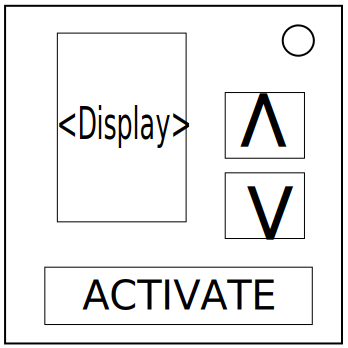

モジュール詳細：ナンバー
420~69 が、僕のお気に入りの数。
- このモジュールは、空白のディスプレー、「ACTIVATE」ボタン、及び上下の矢印で構成されている。「ACTIVATE」ボタンを押すと、ディスプレーに2つの数字が表示される。
- 矢印を使用して数字を設定し、ディスプレーを押して数字を送信する。4桁の数字を送信する必要がある。
- 「ACTIVATE」ボタンは何度でも押してよい。このボタンを押すことでミスが記録されることはない。
- 数字を特定するには、以下の表を使用する。
- ミスが記録されると、モジュール全体がリセットされる。
表1
|
00–24 |
25–49 |
50–74 |
75–99 |
| インジケーターがない |
BADC |
CABD |
DCAB |
CADB |
| 点灯したインジケーター>点灯していないインジケーター |
ACBD |
BCAD |
CDAB |
BCDA |
| 点灯していないインジケーター>点灯したインジケーター |
CDBA |
DBCA |
ABCD |
DABC |
| 点灯していないインジケーター=点灯したインジケーター |
DCBA |
DBAC |
ADBC |
BDCA |
表2
|
A |
B |
C |
D |
| シリアルナンバーの最後の数字が偶数 |
2 |
5 |
7 |
シリアルナンバーの最後の数字 |
| シリアルナンバーの最後の数字が奇数 |
6 |
4 |
シリアルナンバーの最後の数字 |
8 |